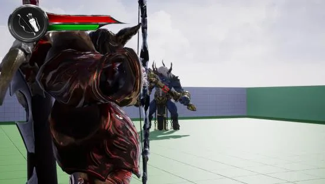
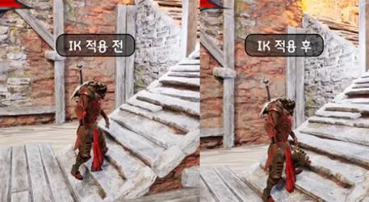
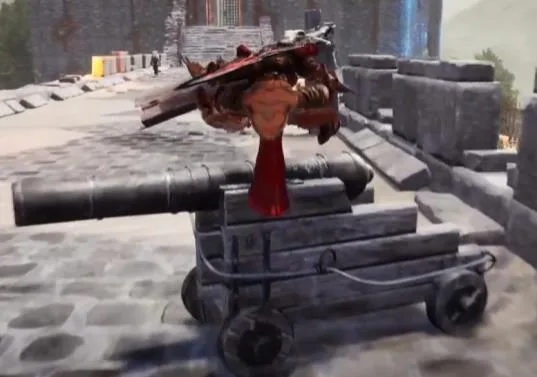
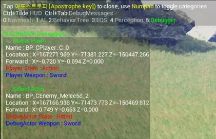

플레이 장면






대표 기능

무기 4종과 콤보
망치, 검, 활, 지팡이마다 공격과 스킬이 다르고, 타이밍 맞춰 누르면 콤보가 이어집니다.
가드 · 반격 · 처형
정해진 순간에 막으면 반격하고, 기절한 적에게 처형 기술을 쓸 수 있습니다.
파쿠르
앞의 지형을 감지해 오르기, 뛰어넘기, 벽 점프, 슬라이딩 중 맞는 동작을 고릅니다.
경사면 발 IK
계단과 경사에서도 발이 바닥에 닿도록 다리와 골반 위치를 맞춥니다.
직접 만든 도구
게임 화면에는 안 보이지만 작업 속도를 바꾼 에디터와 툴입니다.

디버그 텍스트
플레이어와 적의 상태, 무기, 위치를 화면에 바로 표시
기억에 남는 문제
플레이어가 무기를 들면 적도 같이 들던 문제
같은 무기 데이터를 쓰는 캐릭터들이 실행 객체까지 함께 쓰고 있었습니다. 데이터는 공유하되 실행 객체는 캐릭터마다 새로 만들게 바꿔 해결했습니다.
구현 방식과 코드는 기술서에 자세히 정리했습니다.